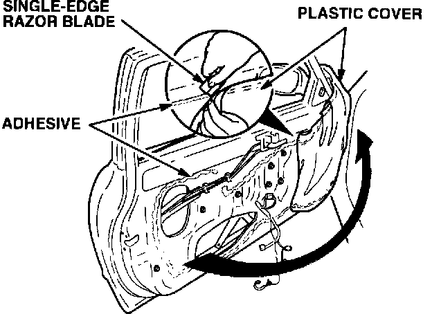
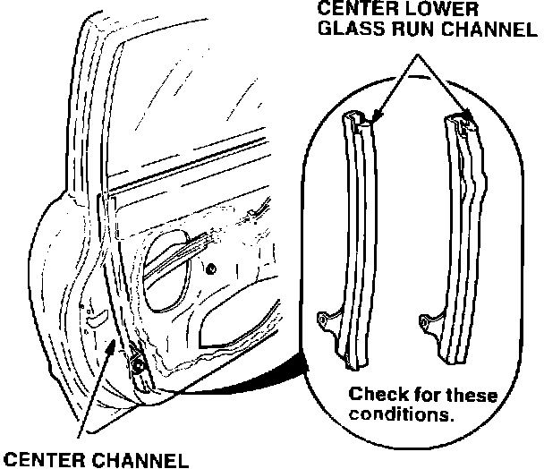
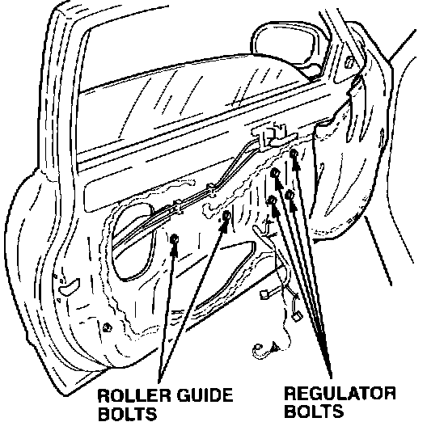
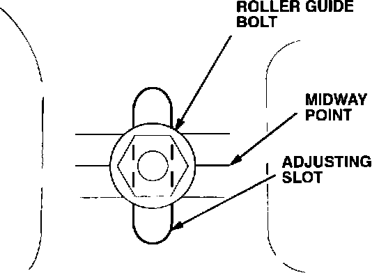
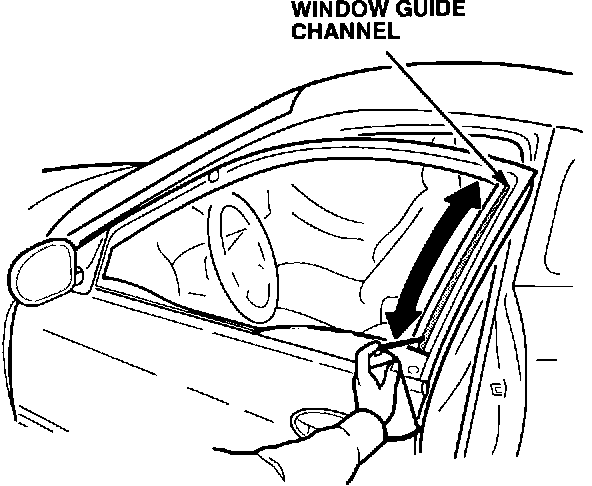

Electric Window - Speed Is Too Slow
BULLETIN NO.94-002
YEAR
1994
MODEL
INTEGRA
3-DOOR
VIN APPLICATION
See VEHICLES AFFECTED
April 5, 1994
Window Speed Is Too Slow
SYMPTOM
The door glass opens or closes slowly, and, in some cases, the glass stops half way down.
PROBABLE CAUSE
The guide pin binds in the center channel guide due to misalignment of the door glass.
VEHICLES AFFECTED
GS-R: thru VIN JH4DC2 ... RS005701
RS, LS: thru VIN JH4DC4 ... RS036550
RECOMMENDED MATERIALS
Brake Cleaner:
Acura P/N TB-BC-602C
3M Weatherstrip Adhesive:
3M P/N 051135-08011
Silicone Spray:
Acura P/N TB-SP-19TA
CORRECTIVE ACTION
Reposition the door glass regulator.
1. Lower the window; then, remove the door panel.
2. Remove the door panel bracket, and disconnect the power mirror wire harness.

3. Use a single-edge razor blade to cut the adhesive in the area shown; then, carefully pull up on the plastic cover (rain shield). Remove enough of the plastic cover to access the door glass regulator bolts.
4. Temporarily reconnect the power window switch, and raise the window all the way up. Check to see if the center lower glass run channel in the center channel is properly positioned.
^ If the glass run channel is properly positioned, go to step 7.
^ If the glass run channel is not properly positioned, continue with step 5.

5. Remove the center lower glass run channel.
6. Thoroughly clean the metal run channel and the rubber seal with brake cleaner; then, glue the rubber seal in place with 3M Weatherstrip Adhesive. (See RECOMMENDED MATERIALS.) Reinstall the run channel.
[NOTICE] 3M Super Weatherstrip Adhesive is not compatible with the run channel seal material.

7. Lower the window approximately half way. Loosen the four window regulator bolts; then, loosen the two roller guide bolts about two turns.

8. Move the adjustable roller guide bolt to a point midway between the top and the bottom of the slot. Temporarily tighten the bolt; then, check the operation of the glass.
^ If the glass operates smoothly, go to step 10.
^ If the glass does not operate smoothly, continue with step 9.
9. Lower the adjustable roller guide bolt an additional 1 mm, and temporarily tighten it; then, check the operation of the window. If the window still does not operate smoothly, continue the process of lowering and tightening the rear guide roller bolt until the window does operate smoothly.
10. Tighten the roller guide bolts; then, tighten the window regulator bolts.

11. Lubricate the window guide channel with silicone spray (see RECOMMENDED MATERIALS), and check the window for correct operation.
12. Lower the window, and reinstall the plastic shield and the door panel assembly.
WARRANTY CLAIM INFORMATION
In warranty:
The normal warranty applies.
Out of warranty:
Any repair performed after warranty expiration may be eligible for goodwill consideration by the District Service Manager or your Zone Office. You must request consideration, and get a decision, before starting work.
Operation number: Left door - 826350
Right door - 827350
Flat rate time: 0.7 hour per door
Failed P/N: Left door - 72271-ST7-003
Right door - 72231-ST7-003
Defect code: 030
Contention code: B02